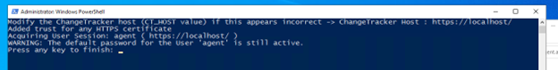
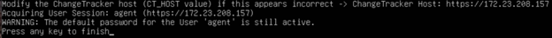
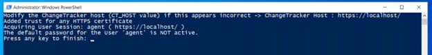
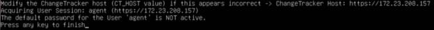

Overview
An account named agent is created during the installation of the Change Tracker Hub. In versions prior to 7.7.4, it was recommended that the agent account's default password was updated after installation of the Hub. Since the release of 7.7.4, a complex password for the agent account is required to be entered during installation.
Instructions
Versions post-7.7.4
Versions of the Hub from 7.7.4 will warn if any agent is using the default password by displaying the following warning in the bottom right of the screen.
The User Notifications page will also display the warning.
Versions pre-7.7.4
For users on versions prior to 7.7.4, the scripts below can be used to determine whether an agent is using the default password. These scripts can be rolled out by an IT automation system. However, if only one account is used by agents to authenticate, then manually running it on one device will be enough as all agents will be using the same authentication details.
The script asks for the Hub's URL and attempts to authenticate as an agent by using the default password. If it connects, then the default password is in use and the following outputs will be produced.
Refer to the following examples of default passwords in use if using versions prior to 7.7.4.
Windows

Linux

If it fails to connect, then the default password is not in use and the following outputs will be seen.
Windows

Linux

For users on versions prior to 7.7.4, the scripts below can be used to determine if an agent is using the default password.
Windows (PowerShell)
# You should modify the host to match with the ChangeTracker host being tested
$CT_HOST="http://192.168.18.16:5000"
Write-Host "Modify the ChangeTracker host (CT_HOST value) if this appears incorrect -> ChangeTracker Host :" $CT_HOST
# Default Agent settings
$agentUser='agent'
$defaultAgentPwd="passWord123"
Function TrustAnyCertificate()
{
if ("AnyCertificatePolicy" -as [type] -eq $null ) {
add-type @"
using System.Net;
using System.Security.Cryptography.X509Certificates;
public class AnyCertificatePolicy : ICertificatePolicy {
public AnyCertificatePolicy() {}
public bool CheckValidationResult(
ServicePoint sPoint, X509Certificate cert,
WebRequest wRequest, int certProb) {
return true;
}
}
"@
Write-Host "Added trust for any HTTPS certificate"
}
[System.Net.ServicePointManager]::CertificatePolicy = new-object AnyCertificatePolicy
}
TrustAnyCertificate
Try {
Write-Host "Acquiring User Session: $agentUser ("$CT_HOST.replace("=$defaultAgentPwd", "=******")")"
$headers = New-Object "System.Collections.Generic.Dictionary[[String],[String]]"
$headers.Add("Accept", "application/json")
$params = "username=$agentUser&password=$defaultAgentPwd&format=json"
$response = Invoke-RestMethod "$($CT_HOST)/api/auth/credentials" -Method 'POST' -Headers $headers -Body $params
if ($null -ne $response -and $response.UserId -ge 0) {
Write-Output "WARNING: The default password for the User 'agent' is still active."
}
}
Catch [System.Exception] {
$resp = $_.Exception.Response;
if ($null -ne $resp -and $resp.StatusCode -eq [Net.HttpStatusCode]::Unauthorized) {
Write-Output "The default password for the User 'agent' is NOT active."
}
else {
if($null -ne $resp -and $resp.StatusCode -eq [Net.HttpStatusCode]::Forbidden) {
Write-Output "The agent account is currently blocked"
Write-Output $_.Exception.Message
}
else {
Write-Output "Error occured, ensure the correct ChangeTracker host has been specified."
Write-Output $_.Exception.Message
}
}
}
Read-Host -Prompt "Press any key to finish"Linux (Bash)
#!/bin/bash
# You should modify the host to match with the ChangeTracker host being tested
CT_HOST="https://192.168.18.16"
echo "Modify the ChangeTracker host (CT_HOST value) if this appears incorrect -> ChangeTracker Host: $CT_HOST"
# Default Agent settings
agentUser='agent'
defaultAgentPwd="passWord123"
echo "Acquiring User Session: $agentUser (${CT_HOST//=$defaultAgentPwd/=******})"
# Set headers and parameters
headers="-H 'Accept: application/json'"
params="username=$agentUser&password=$defaultAgentPwd&format=json"
# Make the API call using curl (with sudo), and capture the response and HTTP status code
response=$(sudo curl -sS -k -X POST "$CT_HOST/api/auth/credentials" \
-H "Accept: application/json" \
--data "$params" \
--write-out "%{http_code}" --output response_body.txt)
# Read the HTTP status code
http_code="${response: -3}" # Last 3 characters of the response variable
response_body=$(<response_body.txt) # Read the response body from the file
# Extract UserId from the response body
userId=$(echo "$response_body" | jq -r '.UserId')
# Check for valid response and userId
if [[ "$http_code" == 200 && "$userId" -ge 0 ]]; then
echo "WARNING: The default password for the User 'agent' is still active, and UserId is valid."
elif [[ "$http_code" == 401 ]]; then
echo "The default password for the User 'agent' is NOT active."
elif [[ "$http_code" == 403 ]]; then
echo "The agent account is currently locked."
else
echo "Error occurred, ensure the correct ChangeTracker host has been specified."
fi
read -p "Press any key to finish"